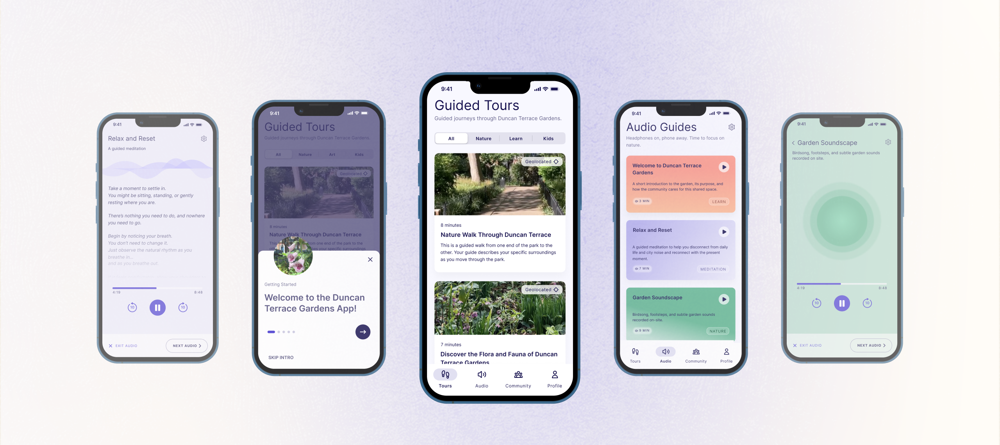
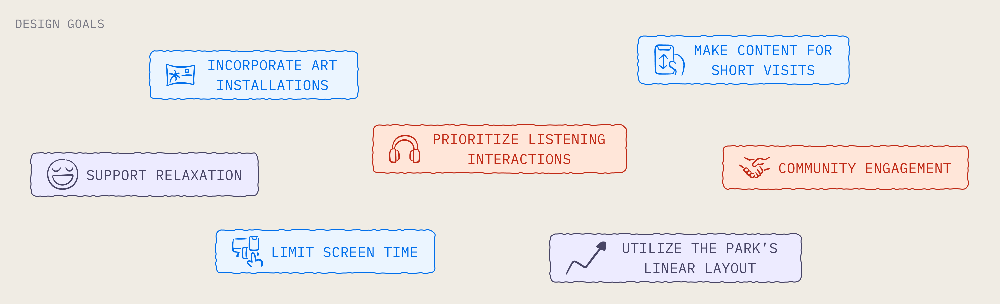
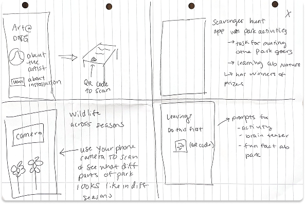

<!DOCTYPE html>
<html lang="en">
<head>
  <meta charset="utf-8"/>
  <meta name="viewport" content="width=device-width, initial-scale=1"/>
  <title>Garden Tours — Sophia Alfred</title>
  <link rel="icon" href="../assets/favicon.png"/>
  <link rel="preconnect" href="https://fonts.googleapis.com"/>
  <link href="https://fonts.googleapis.com/css2?family=Manrope:wght@300;400;500;600&family=IBM+Plex+Mono:wght@400;500&display=swap" rel="stylesheet"/>
  <style>
    @font-face {
      font-family: 'Self Modern';
      src: url('../assets/fonts/Self_Modern_Regular.ttf') format('truetype');
      font-weight: 400; font-style: normal; font-display: swap;
    }
    *, *::before, *::after { margin: 0; padding: 0; box-sizing: border-box; }
    html { scroll-behavior: smooth; }
    body { background: #FFFBF4; color: #1C1C22; -webkit-font-smoothing: antialiased; }
    ::-webkit-scrollbar { width: 6px; }
    ::-webkit-scrollbar-track { background: #FFFBF4; }
    ::-webkit-scrollbar-thumb { background: #A8A8B3; border-radius: 3px; }

    /* Side nav */
    .sidenav {
      position: sticky; top: 56px;
      width: 199px; min-width: 199px;
      height: calc(100vh - 56px);
      padding: 18px;
      background: #FFFBF4;
      border-right: 1px solid rgba(0,0,0,0.06);
      display: flex; flex-direction: column;
      justify-content: space-between;
      flex-shrink: 0; align-self: flex-start;
    }
    .sidenav-top { display: flex; flex-direction: column; gap: 12px; }
    .sidenav-link {
      font-family: 'IBM Plex Mono', monospace; font-weight: 400;
      font-size: 11px; letter-spacing: 0.06em; line-height: 165%;
      text-transform: uppercase; text-decoration: none;
      display: flex; align-items: center; gap: 8px;
      color: #6E6E78; transition: color 0.15s ease;
    }
    .sidenav-link.active { color: #ED5632; font-weight: 500; }
    .sidenav-link:hover { color: #5A5A65; }
    .sidenav-link.home { color: #5A5A65; margin-bottom: 10px; }
    .sidenav-link svg { flex-shrink: 0; }

    /* Responsive content padding — 40px min on tablet, grows on wider screens */
    .content-pad {
      padding: 0 clamp(40px, 7vw, 120px);
    }

    .grid-3 { display: grid; grid-template-columns: repeat(3, 1fr); gap: 24px; margin-top: 20px; }
    .crazy8s-intro { display: grid; grid-template-columns: .8fr 1.2fr; gap: 32px; align-items: center; margin-bottom: 20px; }
    .crazy8s-ideas { display: grid; grid-template-columns: repeat(4, 1fr); gap: 10px; }

    @media (max-width: 768px) {
      .sidenav { display: none; }
      .grid-3 { grid-template-columns: 1fr; }
      .crazy8s-intro { grid-template-columns: 1fr; }
      .crazy8s-ideas { grid-template-columns: 1fr; }
    }
  </style>
  <script src="https://unpkg.com/react@18.3.1/umd/react.development.js" crossorigin="anonymous"></script>
  <script src="https://unpkg.com/react-dom@18.3.1/umd/react-dom.development.js" crossorigin="anonymous"></script>
  <script src="https://unpkg.com/@babel/standalone@7.29.0/babel.min.js" crossorigin="anonymous"></script>
</head>
<body>
<div id="root"></div>
<script type="text/babel">

function EWNav({ activePage = 'work' }) {
  const [scrolled, setScrolled] = React.useState(false);

  React.useEffect(() => {
    const onScroll = () => setScrolled(window.scrollY > 60);
    window.addEventListener('scroll', onScroll, { passive: true });
    onScroll();
    return () => window.removeEventListener('scroll', onScroll);
  }, []);

  return (
    <nav style={{
      width: '100%', height: 56,
      background: scrolled ? 'rgba(255,251,244,0.92)' : 'rgba(255,251,244,0.1)',
      backdropFilter: 'blur(14px)', WebkitBackdropFilter: 'blur(14px)',
      borderBottom: '1px solid rgba(28,28,34,0.07)',
      display: 'flex', alignItems: 'center',
      justifyContent: 'space-between', padding: '0 24px',
      position: 'fixed', top: 0, zIndex: 100, boxSizing: 'border-box',
      transition: 'background 0.35s ease',
    }}>
      <a href="../index.html" style={{ display: 'flex', alignItems: 'center', textDecoration: 'none' }}>
        
      </a>
      <div style={{ display: 'flex', gap: 24 }}>
        {[
          ['work',   'Work',   '../index.html#case-studies'],
          ['about',  'About',  '../about.html'],
          ['resume', 'Resume', '../assets/sophia-resume.pdf'],
        ].map(([id, label, href]) =>
          <a key={id} href={href}
            target={id === 'resume' ? '_blank' : undefined}
            rel={id === 'resume' ? 'noopener noreferrer' : undefined}
            style={{
              fontFamily: 'Manrope, sans-serif', fontWeight: 500, fontSize: 14,
              letterSpacing: '0.01em', textDecoration: 'none',
              color: activePage === id ? '#1C1C22' : '#7A7A85', transition: 'color 0.2s',
            }}
            onMouseEnter={e => e.target.style.color = '#1C1C22'}
            onMouseLeave={e => e.target.style.color = activePage === id ? '#1C1C22' : '#7A7A85'}>
            {label}
          </a>
        )}
      </div>
    </nav>
  );
}

function EWFooter() {
  return (
    <footer style={{ background: '#1C1C23', boxShadow: '0px 4px 4px rgba(0,0,0,0.25)' }}>
      <div style={{
        borderTop: '1px solid rgba(255,255,255,0.08)', padding: '40px 36px',
        display: 'flex', justifyContent: 'space-between',
        alignItems: 'flex-start', flexWrap: 'wrap', gap: 24
      }}>
        
        <div style={{ display: 'flex', gap: 48 }}>
          {[
            { heading: 'say hi', links: [
              { label: 'LinkedIn', href: 'https://www.linkedin.com/in/sophia-alfred-sca07/' },
              { label: 'Email',    href: 'mailto:sophiacalfred@gmail.com' },
              { label: 'Resume',   href: '../assets/sophia-resume.pdf', external: true },
            ]},
            { heading: 'work', links: [
              { label: 'The Living Record', href: 'living-record.html' },
              { label: 'Garden Tours',      href: 'garden-tours.html' },
              { label: 'Yogapedia',         href: 'yogapedia.html' },
              { label: 'My Art Gallery',    href: '../about.html#gallery' },
            ]},
          ].map(col =>
            <div key={col.heading} style={{ display: 'flex', flexDirection: 'column', gap: 10 }}>
              <div style={{
                fontFamily: 'Manrope, sans-serif', fontWeight: 500, fontSize: 11,
                color: 'rgba(255,255,255,0.5)', letterSpacing: '0.08em',
                textTransform: 'lowercase', marginBottom: 2,
              }}>{col.heading}</div>
              {col.links.map(l =>
                <a key={l.label} href={l.href}
                  target={l.external ? '_blank' : undefined}
                  rel={l.external ? 'noopener noreferrer' : undefined}
                  style={{
                    fontFamily: 'Manrope, sans-serif', fontSize: 13,
                    color: 'rgba(255,255,255,0.35)', letterSpacing: '0.01em',
                    textDecoration: 'none', transition: 'color 0.2s'
                  }}
                  onMouseEnter={e => e.target.style.color = 'rgba(255,255,255,0.85)'}
                  onMouseLeave={e => e.target.style.color = 'rgba(255,255,255,0.35)'}>
                  {l.label}
                </a>
              )}
            </div>
          )}
        </div>
      </div>
      <div style={{
        padding: '0 36px 24px', fontFamily: 'Manrope, sans-serif',
        letterSpacing: '0.02em',
      }}>
        <div style={{ fontSize: 11, color: 'rgba(255,255,255,0.35)', marginBottom: 4 }}>Portfolio created with Claude Code :)</div>
        <div style={{ fontSize: 11, color: 'rgba(255,255,255,0.2)' }}>© 2026 Sophia Alfred</div>
      </div>
    </footer>
  );
}

const SECTION_IDS = ['overview', 'research', 'insights', 'ideation', 'concept', 'final-designs', 'prototype', 'impact'];
const NAV_LINKS = [
  { id: 'overview',      label: 'Overview' },
  { id: 'research',      label: 'User Research' },
  { id: 'insights',      label: 'Insights' },
  { id: 'ideation',      label: 'Ideation' },
  { id: 'concept',       label: 'Concept Design' },
  { id: 'final-designs', label: 'Solution' },
  { id: 'prototype',     label: 'Prototype' },
  { id: 'impact',        label: 'Impact' },
];

const ArrowLeft = () => (
  <svg width="12" height="12" viewBox="0 0 12 12" fill="none">
    <path d="M7.5 2L3.5 6L7.5 10" stroke="#5A5A65" strokeWidth="1.2" strokeLinecap="round" strokeLinejoin="round"/>
  </svg>
);
const ArrowUp = () => (
  <svg width="12" height="12" viewBox="0 0 12 12" fill="none" style={{ transform: 'rotate(90deg)' }}>
    <path d="M7.5 2L3.5 6L7.5 10" stroke="#5A5A65" strokeWidth="1.2" strokeLinecap="round" strokeLinejoin="round"/>
  </svg>
);

function SideNav() {
  const [active, setActive] = React.useState('overview');

  React.useEffect(() => {
    const observer = new IntersectionObserver((entries) => {
      entries.forEach(entry => {
        if (entry.isIntersecting) setActive(entry.target.id);
      });
    }, { rootMargin: '-56px 0px -70% 0px', threshold: 0 });

    SECTION_IDS.forEach(id => {
      const el = document.getElementById(id);
      if (el) observer.observe(el);
    });
    return () => observer.disconnect();
  }, []);

  return (
    <aside className="sidenav">
      <div className="sidenav-top">
        <a href="../index.html" className="sidenav-link home">
          <ArrowLeft /> HOME
        </a>
        {NAV_LINKS.map(({ id, label }) => (
          <a key={id} href={`#${id}`}
            className={`sidenav-link${active === id ? ' active' : ''}`}>
            {label}
          </a>
        ))}
      </div>
      <a href="#overview"
        className="sidenav-link home"
        onClick={e => { e.preventDefault(); window.scrollTo({ top: 0, behavior: 'smooth' }); }}>
        <ArrowUp /> BACK TO TOP
      </a>
    </aside>
  );
}

/* ── Shared styles ── */
const mono = { fontFamily: "'IBM Plex Mono', monospace" };

const sectionLabel = {
  ...mono, fontSize: 11, fontWeight: 500, letterSpacing: '0.1em',
  textTransform: 'uppercase', color: '#ED5632', marginBottom: 8,
};

/* Section H3 subheadings — Manrope medium weight */
const sectionHeading = {
  fontFamily: 'Manrope, sans-serif', fontWeight: 500,
  fontSize: 'clamp(16px, 1.6vw, 20px)', lineHeight: 1.35,
  color: '#1C1C22', marginBottom: 8,
};

const bodyText = {
  fontFamily: 'Manrope, sans-serif', fontWeight: 400,
  fontSize: 14, lineHeight: '21px', color: '#7A7A85',
};

/* Horizontal padding is handled by the .content-pad CSS class (responsive clamp) */

function GardenToursPage() {
  const [protoHovered, setProtoHovered] = React.useState(false);
  return (
    <div style={{ minHeight: '100vh', display: 'flex', flexDirection: 'column', background: '#FFFBF4' }}>
      <EWNav activePage="work" />

      {/* COVER — full width above the flex layout */}
      

      {/* PAGE LAYOUT — sidenav + main */}
      <div style={{ display: 'flex', flex: 1 }}>
        <SideNav />

        <main style={{ flex: 1, minWidth: 0 }}>

          {/* ── OVERVIEW ── */}
          <section id="overview" style={{ paddingTop: 48 }}>
            <div className="content-pad">
              <div style={{ ...mono, fontSize: 11, letterSpacing: '0.08em', textTransform: 'uppercase', color: '#A8A8B3', marginBottom: 8 }}>
                App Design for Local London Park
              </div>
              <h2 style={{ fontFamily: "'Self Modern', serif", fontWeight: 400, fontSize: 'clamp(24px, 3.5vw, 44px)', color: '#1C1C22', lineHeight: 1.1, marginBottom: 24 }}>
                Garden Tours
              </h2>

              {/* Meta strip */}
              <div style={{
                display: 'grid', gridTemplateColumns: 'repeat(4, 1fr)', gap: 16,
                borderTop: '1px solid rgba(28,28,34,0.1)', paddingTop: 16, marginBottom: 16,
              }}>
                {[
                  { label: 'Timeline',           value: 'Oct 2025 – Jan 2026' },
                  { label: 'Role',               value: 'Product Designer' },
                  { label: 'Team',               value: 'Victoria Chime\nShruti Vinodh\nPeter Workman' },
                  { label: 'Tools', value: "Figma\nTaguette\nGoogle AI Studio" },
                ].map(({ label, value }) => (
                  <div key={label}>
                    <div style={{ ...mono, fontSize: 10, fontWeight: 500, letterSpacing: '0.1em', textTransform: 'uppercase', color: '#ED5632', marginBottom: 6 }}>{label}</div>
                    <div style={{ fontFamily: 'Manrope, sans-serif', fontSize: 13, color: '#5A5A65', lineHeight: 1.65, whiteSpace: 'pre-line' }}>{value}</div>
                  </div>
                ))}
              </div>

              <div style={sectionLabel}>Overview</div>
              <h3 style={{ fontFamily: 'Manrope, sans-serif', fontWeight: 400, fontSize: 'clamp(15px, 1.5vw, 18px)', lineHeight: 1.55, color: '#1C1C22', marginBottom: 8 }}>
                How can we develop interactive digital technology that will enhance the visitor experience of Duncan Terrace Gardens?
              </h3>
              <p style={{ ...bodyText, marginBottom: 24 }}>
                This project explored how interactive digital technologies could meaningfully improve the experience of visitors to Duncan Terrace Gardens. Through naturalistic observations, semi-structured interviews, and synthesis methods such as affinity mapping and personas, I identified key visitor needs. This informed a set of design goals and ultimately a concept direction that focused on relaxation, nature engagement, and community connection.
              </p>
              <a href="#final-designs" style={{
                display: 'inline-flex', alignItems: 'center', gap: 10,
                background: 'rgba(237,86,50,0.12)', borderRadius: 5,
                padding: '10px 18px', textDecoration: 'none',
              }}>
                <span style={{ ...mono, fontSize: 11, fontWeight: 500, letterSpacing: '0.08em', textTransform: 'uppercase', color: '#ED5632' }}>Jump to Solution</span>
                <span style={{ color: '#ED5632', fontSize: 14, lineHeight: 1 }}>↓</span>
              </a>
            </div>
          </section>

          {/* ── USER RESEARCH ── */}
          <section id="research" style={{ paddingTop: 48 }}>
            <div className="content-pad">
              <div style={sectionLabel}>User Research</div>
              <p style={{ ...bodyText, marginBottom: 8 }}>Our team took a three pronged approach to user research:</p>
              <div className="grid-3">
                {[
                  { title: 'Desk Research',  sub: 'social media and website review',  img: '../assets/garden-tours-case-study/desk-research-image.png' },
                  { title: 'Observations',   sub: 'naturalistic observations',         img: '../assets/garden-tours-case-study/observations-image.png' },
                  { title: 'Interviews',     sub: 'conversations with park visitors',  img: '../assets/garden-tours-case-study/interviews-image.png' },
                ].map(({ title, sub, img }) => (
                  <div key={title} style={{ background: '#FFFFFF', borderRadius: 4, overflow: 'hidden', border: '1px solid #DAD7D7' }}>
                    
                    <div style={{ padding: '12px 16px 16px' }}>
                      <div style={{ fontFamily: 'Manrope, sans-serif', fontWeight: 400, fontSize: 16, color: '#1C1C22', marginBottom: 4 }}>{title}</div>
                      <div style={{ fontFamily: 'Manrope, sans-serif', fontSize: 12, color: '#7A7A85' }}>{sub}</div>
                    </div>
                  </div>
                ))}
              </div>
            </div>
          </section>

          {/* ── INSIGHTS ── */}
          <section id="insights" style={{ paddingTop: 48 }}>
            <div className="content-pad">
              <div style={sectionLabel}>Insights</div>
              <h3 style={sectionHeading}>Research → Design Goals</h3>
              <p style={{ ...bodyText, marginBottom: 8 }}>
                We analyzed the data through affinity diagramming and empathy mapping. Then summarized the results into key insights. Using those insights, we created corresponding design goals:
              </p>
              
            </div>
          </section>

          {/* ── IDEATION ── */}
          <section id="ideation" style={{ paddingTop: 48 }}>
            <div className="content-pad">
              <div style={sectionLabel}>Ideation</div>
              <h3 style={sectionHeading}>Crazy 8s</h3>
              {/* Dark purple contained box */}
              <div style={{ background: '#3D3B6E', borderRadius: 4, padding: '28px', marginTop: 20 }}>
                <div className="crazy8s-intro">
                  
                  <p style={{ ...bodyText, color: 'rgba(255,255,255,0.75)', paddingTop: 4 }}>
                    As a team, we ran multiple rounds of Crazy 8s to rapidly explore a wide range of ideas, guided by our design goals. The highest voted ideas were:
                  </p>
                </div>
                <div className="crazy8s-ideas">
                  {[
                    { title: 'Nature Art Exhibition',   desc: 'Guided tour of the parks art exhibits.',                                                chosen: false },
                    { title: 'Self Guided Nature Walk', desc: 'Guided tour of the parks plants and immersive nature sounds to block traffic.',         chosen: true  },
                    { title: 'Seasonal Camera App',     desc: 'Displays what the park looks like at different times of year.',                         chosen: false },
                    { title: 'Guided Meditation',       desc: 'Geo located guided meditation in different parts of the park.',                         chosen: false },
                  ].map(({ title, desc, chosen }) => (
                    <div key={title} style={{
                      background: chosen ? '#fff' : 'rgba(255,255,255,0.08)',
                      borderRadius: 4, padding: '16px 14px',
                      border: chosen ? 'none' : '1px solid rgba(255,255,255,0.12)',
                    }}>
                      <div style={{ ...mono, fontSize: 10, fontWeight: 500, letterSpacing: '0.07em', textTransform: 'uppercase', color: chosen ? '#1C1C22' : 'rgba(255,255,255,0.45)', marginBottom: 8 }}>{title}</div>
                      <p style={{ fontFamily: 'Manrope, sans-serif', fontSize: 13, lineHeight: '19px', color: chosen ? '#5A5A65' : 'rgba(255,255,255,0.6)', marginBottom: chosen ? 14 : 0 }}>{desc}</p>
                      {chosen && (
                        <div style={{ ...mono, fontSize: 10, fontWeight: 500, letterSpacing: '0.06em', textTransform: 'uppercase', color: '#1C1C22', background: '#EEEDF0', display: 'inline-block', padding: '4px 9px', borderRadius: 2 }}>
                          Chosen ✓
                        </div>
                      )}
                    </div>
                  ))}
                </div>
              </div>
            </div>
          </section>

          {/* ── CONCEPT DESIGN ── */}
          <section id="concept" style={{ paddingTop: 48 }}>
            <div className="content-pad">
              <div style={sectionLabel}>Concept Design</div>
              <p style={{ ...bodyText, marginBottom: 8 }}>
                Having selected the self guided nature walk idea, I applied our design goals to develop the concept. This led me to develop and incorporate these three main concepts:
              </p>
              <div className="grid-3">
                {[
                  { title: 'Geo Located',        desc: "Uses user's live location for the park tours.",                                              img: '../assets/garden-tours-case-study/geo-located-icon.png',    bg: '#EAF5FF', tags: ['Contextual', 'Wayfinding'] },
                  { title: 'Listening Based',    desc: 'Audio guides + transcripts to keep screen time low while maintaining accessibility.',         img: '../assets/garden-tours-case-study/listening-icon.png',      bg: '#E8E4F5', tags: ['Accessibility', 'Nature'] },
                  { title: 'Community Oriented', desc: 'Updates, events, and community connection.',                                                 img: '../assets/garden-tours-case-study/community-feed-icon.png', bg: '#FAE8DC', tags: ['Community', 'Retention'] },
                ].map(({ title, desc, img, bg, tags }) => (
                  <div key={title} style={{ background: '#ffffff', borderRadius: 4, overflow: 'hidden', border: '1px solid #DAD7D7', display: 'flex', flexDirection: 'column' }}>
                    <div style={{ background: bg, padding: '24px', display: 'flex', alignItems: 'center', justifyContent: 'center', height: 132 }}>
                      
                    </div>
                    <div style={{ padding: '16px', display: 'flex', flexDirection: 'column', flex: 1 }}>
                      <div style={{ fontFamily: 'Manrope, sans-serif', fontWeight: 400, fontSize: 16, color: '#1C1C22', marginBottom: 6 }}>{title}</div>
                      <p style={{ fontFamily: 'Manrope, sans-serif', fontSize: 13, color: '#7A7A85', lineHeight: '19px', marginBottom: 12 }}>{desc}</p>
                      <div style={{ display: 'flex', gap: 6, flexWrap: 'wrap', marginTop: 'auto' }}>
                        {tags.map(t => (
                          <span key={t} style={{ ...mono, fontSize: 10, fontWeight: 500, letterSpacing: '0.06em', textTransform: 'uppercase', color: '#7A7A85', border: '1px solid rgba(28,28,34,0.15)', borderRadius: 2, padding: '3px 7px' }}>{t}</span>
                        ))}
                      </div>
                    </div>
                  </div>
                ))}
              </div>
            </div>
          </section>

          {/* ── FINAL DESIGNS ── */}
          <div id="final-designs" style={{ paddingTop: 48 }}>

            {/* Guided Tours */}
            <div style={{ paddingBottom: 32 }}>
              <div className="content-pad">
                <div style={sectionLabel}>Final Designs</div>
                <h3 style={sectionHeading}>Guided Tours</h3>
                <p style={{ ...bodyText, marginBottom: 16 }}>
                  The Guided Tours feature supports the primary design goal of increasing engagement with the park's wildlife, art installations, and ecological features. Each tour is geo located, and users select their starting point or use live location services.
                </p>
              </div>
              <video src="../assets/garden-tours-case-study/guided-tours.mov" autoPlay muted loop playsInline
                className="content-pad" style={{ width: '100%', display: 'block', boxSizing: 'border-box', marginTop: 20 }} />
            </div>

            {/* Audio Guides */}
            <div style={{ paddingBottom: 32 }}>
              <div className="content-pad">
                <h3 style={sectionHeading}>Audio Guides</h3>
                <p style={{ ...bodyText, marginBottom: 16 }}>
                  Unlike the guided tours, this feature is a stationary, immersive listening experience — meditation, soundscapes, and educational audio about the park. Playback continues even when the phone is locked, reinforcing the listening-first interaction model.
                </p>
              </div>
              <video src="../assets/garden-tours-case-study/audio-guides.mov" autoPlay muted loop playsInline
                className="content-pad" style={{ width: '100%', display: 'block', boxSizing: 'border-box', marginTop: 20 }} />
            </div>

            {/* Community Feed */}
            <div style={{ paddingBottom: 32 }}>
              <div className="content-pad">
                <h3 style={sectionHeading}>Community Feed</h3>
                <p style={{ ...bodyText, marginBottom: 16 }}>
                  The Community feature was designed to reflect the informal and situational nature of social interaction observed in the park. Users can share photos, comment on updates, and post announcements — helping extend in-person interactions into a digital space.
                </p>
              </div>
              <video src="../assets/garden-tours-case-study/community-feed.mov" autoPlay muted loop playsInline
                className="content-pad" style={{ width: '100%', display: 'block', boxSizing: 'border-box', marginTop: 20 }} />
            </div>
          </div>

          {/* ── PROTOTYPE ── */}
          <section id="prototype" style={{ paddingTop: 48 }}>
            <div className="content-pad">
              <div style={sectionLabel}>Prototyping</div>
              <h3 style={sectionHeading}>Built a Working Prototype</h3>
              <p style={{ ...bodyText, marginBottom: 16 }}>
                To test the concept beyond static screens, I vibe coded a functioning prototype using Google AI Studio. Prompting through layout, interactions, and visual design in real time let me explore how the experience actually feels.
              </p>
              <a href="https://aistudio.google.com/apps/drive/1ySHx5BL7hf8wUL61CnDNJAwP2DTfPp3P?fullscreenApplet=true" target="_blank" rel="noopener noreferrer" style={{
                display: 'inline-flex', alignItems: 'center', gap: 6,
                fontFamily: 'Manrope, sans-serif', fontWeight: 500, fontSize: 14,
                color: '#1C1C22', textDecoration: 'none', borderBottom: '1px solid #1C1C22', paddingBottom: 2,
                marginBottom: 20,
              }}>View live prototype →</a>
            </div>
            <div
              className="content-pad"
              onMouseEnter={() => setProtoHovered(true)}
              onMouseLeave={() => setProtoHovered(false)}
              style={{ width: '40%', boxSizing: 'border-box', marginTop: 20, display: 'block' }}>
              <video src="../assets/garden-tours-case-study/garden-tours-ai-prototype.mp4"
                autoPlay muted loop playsInline
                controls={protoHovered}
                style={{ width: '100%', display: 'block' }} />
            </div>
          </section>

          {/* ── IMPACT & NEXT STEPS ── */}
          <section id="impact" style={{ paddingTop: 48, paddingBottom: 64 }}>
            <div className="content-pad">
              <div style={sectionLabel}>Impact &amp; Next Steps</div>
              <h3 style={sectionHeading}>Impact on the opportunity space</h3>
              <p style={{ ...bodyText, marginBottom: 32 }}>
                The solution demonstrates how interactive digital technology can enhance everyday enjoyment of Duncan Terrace Gardens while supporting the park's mission around biodiversity, wildlife education, and community connection.
              </p>
              <h3 style={{ ...sectionHeading, marginBottom: 16 }}>Next steps</h3>
              <div style={{ display: 'flex', flexDirection: 'column', gap: 8, marginBottom: 48 }}>
                {['User testing, in context', 'Stakeholder collaboration / adoption', 'Explore technical constraints'].map((step, i) => (
                  <div key={i} style={{ display: 'flex', alignItems: 'baseline', gap: 20 }}>
                    <span style={{ ...mono, fontSize: 12, fontWeight: 500, color: '#ED5632', minWidth: 24 }}>0{i + 1}</span>
                    <span style={{ fontFamily: 'Manrope, sans-serif', fontSize: 15, color: '#5A5A65' }}>{step}</span>
                  </div>
                ))}
              </div>
              <div style={{ display: 'flex', alignItems: 'center', justifyContent: 'space-between', flexWrap: 'wrap', gap: 16 }}>
                <a href="../index.html" style={{
                  display: 'inline-flex', alignItems: 'center', gap: 8,
                  fontFamily: 'Manrope, sans-serif', fontWeight: 500, fontSize: 14,
                  color: '#1C1C22', textDecoration: 'none', borderBottom: '1px solid #1C1C22', paddingBottom: 2,
                }}>← Back to all work</a>
                <a href="yogapedia.html" style={{
                  display: 'inline-flex', alignItems: 'center', gap: 8,
                  fontFamily: 'Manrope, sans-serif', fontWeight: 500, fontSize: 14,
                  color: '#1C1C22', textDecoration: 'none', borderBottom: '1px solid #1C1C22', paddingBottom: 2,
                }}>Next: Yogapedia →</a>
              </div>
            </div>
          </section>

        </main>
      </div>

      <EWFooter />
    </div>
  );
}

ReactDOM.createRoot(document.getElementById('root')).render(<GardenToursPage />);
</script>
</body>
</html>
